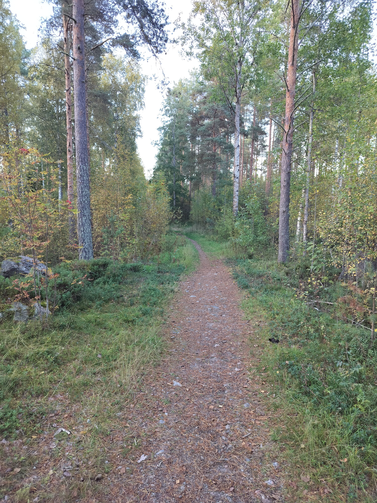
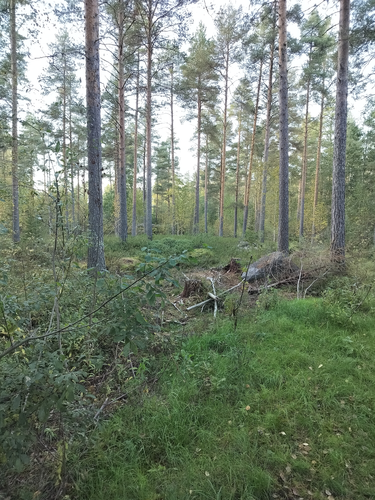

Luontoreitin alku.
Tällä sivulla olen esitellyt hieman kävelyreittiä kannuksessa.
Alhaalla on otettu kuvia kannuksen luontoreitistä. Reitti on hyvin lyhyt reitti, mutta maisemat ovat kuitenkin hyvin hienot. reitillä näkyy useita pieniä kivimuodostelmia, sekä myös todella iso kokoisia kiviä.
Reitillä voit nähdä useita eri lintuja ja vaikka niitä ei näe niiden laulua kuulee varmasti koko matkan. Reitillä näkee myös usein metsäjäniksiä, jos on vain tarkkana.

Luontoreitin alku.

Maisemaa reitin varrelta